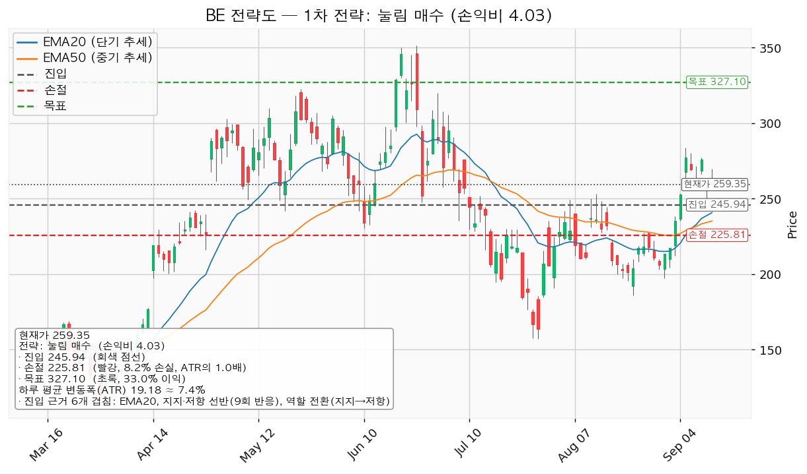
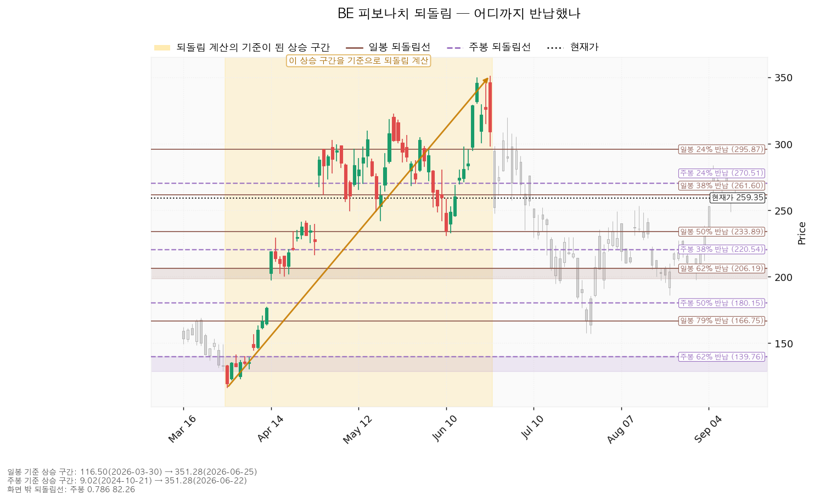
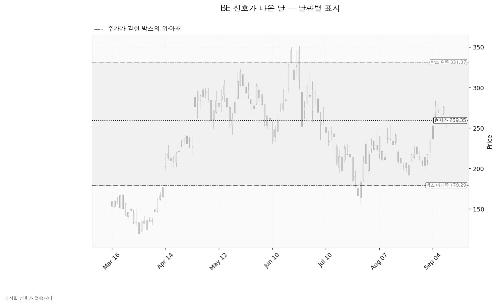
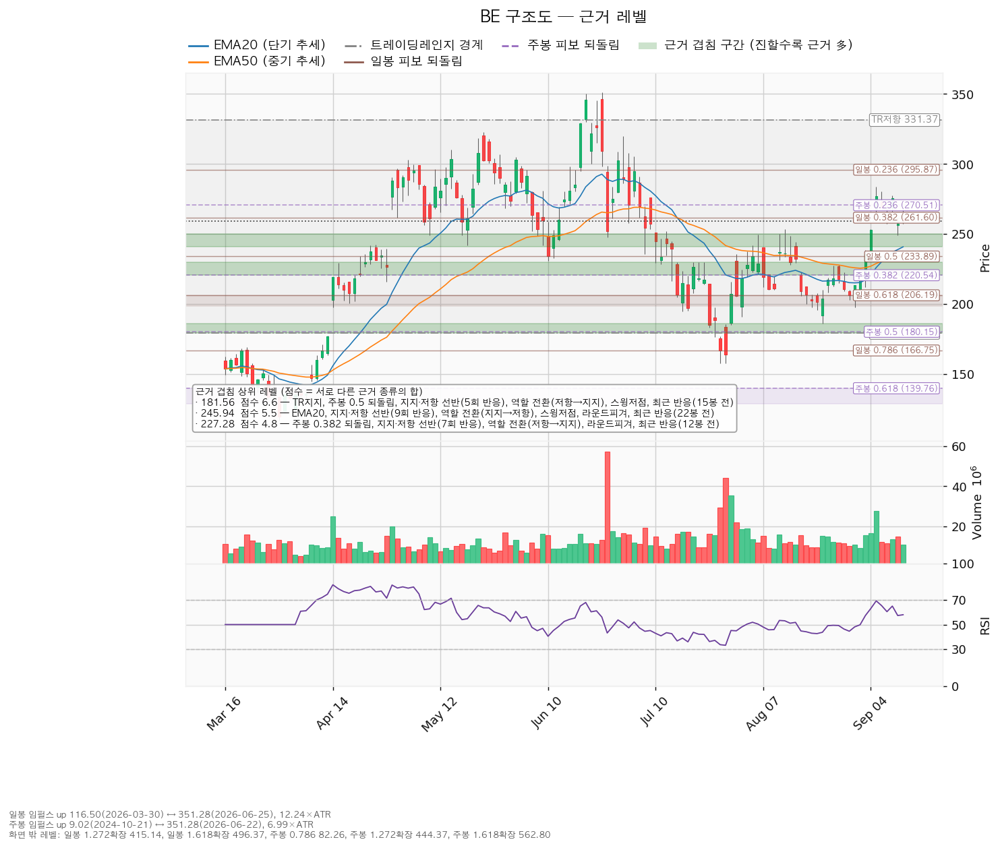

블룸에너지(BE)는 천연가스·수소로 전기를 만드는 고체산화물 연료전지 발전 장비를 제조하는 미국 기업으로, 데이터센터·공장·상업시설에 현장 설치형 전원을 공급합니다.
기준 종가는 2026-09-15의 259.35달러입니다(직전 리포트 기준가 275.75달러 대비 -5.95%).
| 구분 | 가격 | 판정 방식 | 현재 상태 | 현재가 대비 |
|---|---|---|---|---|
| 회복선 (상승 전환 판정) | 270.25달러 | 일봉 종가로 회복한 뒤 되돌림에서 지지되는지 | 회복 대기 | +4.20% |
| 집행 손절 | 225.81달러 | 종가·장중 구분 없이 닿으면 전량 청산 — 1주를 보유 중이므로 지금 유효하게 작동합니다 | 작동 중 | -12.93% |
| 관망 종료 기준 (추가 매수 중단) | 240.78달러 또는 2026-10-28 실적 | 일봉 종가가 아래로 마감하면 245.94달러 추가 매수를 접습니다 | 유지 중 | -7.16% |
| 확인선 (상승 확정) | 327.10달러 | 일봉 종가 돌파 후 되돌림 지지 | 미돌파 | +26.12% |
| 폐기선 (구조) | 179.29달러 | 이탈 후 3거래일 내 종가 회복 실패(또는 그 전에 160.11 아래 종가 마감) + 반등에서 저항 확인 — 하루 변동폭의 4.17배 거리로 실무상 작동하지 않습니다 | 유지 중 | -30.87% |
회복선 270.25달러와 대표 셋업의 진입 245.94달러는 역할이 다릅니다. 270.25달러는 이 구조가 위로 풀렸는지 판정하는 선이고, 245.94달러는 그 판정 전에 눌림에서 추가분을 잡는 가격입니다. 두 가격을 섞어 쓰지 마십시오.
폐기선까지 -30.87%를 견디며 기다리라는 지침이 아닙니다. 실제로 보는 선은 보유분의 손절 225.81달러와 추가 매수 중단선 240.78달러입니다.
직전 리포트는 "270.25달러까지 눌릴 때 분할 매수, 집행 손절 241.56달러, 목표 327.10달러, 관망 종료 245.60달러"를 걸었습니다. 발행(2026-09-14 오후) 직후의 미국장에서 조건이 충족됐습니다.
| 직전이 건 조건 | 판정 | 근거 |
|---|---|---|
| 진입 270.25달러 (눌림 매수) | 충족 | 2026-09-14 시가 256.39달러로 이미 270.25 아래에서 출발, 저가 249.05달러 |
| 집행 손절 241.56달러 | 미충족 | 이후 최저가 249.05달러(09-14), 손절까지 7.49달러 남음 |
| 목표 327.10달러 | 미충족 | 이후 최고가 269.83달러(09-15) |
| 관망 종료 245.60달러 일봉 종가 이탈 | 미충족 | 09-14 종가 257.05, 09-15 종가 259.35 |
| 회복선 292.94달러 | 미충족 | 도달 없음 |
| 무효화 2단계 경고선 251.12달러 종가 이탈 | 미충족 | 장중 249.05까지 밀렸으나 종가는 두 날 모두 위 |
진입 조건이 충족된 뒤 목표·손절 어느 쪽에도 닿지 않았고, 현재는 진입한 상태로 진행 중입니다.
체결 장부에는 2026-09-15에 1주를 258.87달러에 매수한 기록이 있습니다. 계획과 집행이 벌어진 종목은 아닙니다. 현재가 259.35달러 기준 평가손익은 +0.19%(+0.48달러)입니다.
직전 계획에서 어긋난 것은 체결 가격입니다. 09-14는 전일 종가 275.75달러에서 시가 256.39달러로 갭 하락해 출발했고, 270.25달러 지정가는 그 시가에 체결되는 구조였습니다. 계획한 진입가보다 -5.13% 낮은 자리입니다.
| 항목 | 직전(09-14) | 이번(09-16) | 왜 움직였나 |
|---|---|---|---|
| 회복선 | 292.94달러 | 270.25달러 | 가격이 275.75 → 259.35로 밀리면서 현재가 위 첫 겹침 구간이 바뀌었습니다. 직전 리포트의 진입가였던 270.25(라운드피겨 270 + 주봉 24% 되돌림)가 이제 현재가 위에 있어 회복선이 됐습니다 |
| 확인선 | 327.10달러 | 327.10달러 (동일) | 스윙고점 + 박스 상단 저항으로 근거가 그대로입니다 |
| 폐기선 | 179.29달러 | 179.29달러 (동일) | 박스 하단이 바뀌지 않았습니다 |
| 대표 셋업 진입 | 270.25달러 (겹침 2.1점) | 245.94달러 (겹침 5.5점) | EMA20이 236.90 → 240.78로 올라오면서 9회 반응한 선반(245.60)·라운드피겨 250·스윙저점과 한 구간(240.78~250.00)에 겹쳤습니다 |
| 대표 셋업 손절 | 241.56달러 | 225.81달러 | 직전은 아래에 겹침 구간이 없어 ATR 1.5배 기계적 위치였고, 이번은 겹침 구간(230.61~240.00, 4.3점) 바로 아래로 잡혔습니다 |
| 대표 셋업 목표 | 327.10달러 | 327.10달러 (동일) | — |
| 손익비 | 1:1.98 | 1:4.03 | 진입이 24.31달러 낮아진 반면 손절은 15.75달러만 낮아져 손실 폭이 28.69 → 20.13달러로 줄었습니다 |
| RSI(14) | 65.04 | 58.00 | — |
| 하루 평균 변동폭 | 19.13달러 | 19.18달러 | 거의 그대로입니다 |
선반 245.60달러의 반응 횟수가 8회에서 9회로 늘었습니다(직전 반응일 2026-09-14). 직전 리포트에서 관망 종료 기준으로 썼던 자리가 실제로 다시 시험받았고, 종가로는 지켜졌습니다.
셋업 구성도 달라졌습니다. 직전에는 현재가가 박스 중상단이라 지지 확인 매수가 산출되지 않았는데, 이번에는 현재가가 9회 지켜진 선반 245.60달러 위에 있고 박스 안쪽 판정이 매집 우위라 지지 확인 매수가 추가로 산출됐습니다. 지금 보유 중인 1주는 이 셋업에 해당합니다.
직전은 "270.25달러 눌림 대기"(미진입)였고 이번은 "보유 1주 유지 + 245.94달러 추가 매수 대기"입니다. 방향 판단은 바뀌지 않았습니다 — 박스 안 매집 우위, 목표 327.10달러, 폐기선 179.29달러가 그대로입니다. 달라진 것은 진입 좌표와 보유 여부입니다.
직전 리포트에서 정정할 오류는 없습니다. 밸류에이션·추정치·현금흐름 서술은 이번 조회값과 방향이 같습니다.
| 항목 | 값 | 의미 |
|---|---|---|
| 현재가(2026-09-15 종가) | 259.35달러 | 그날 저가 257.09 / 고가 269.83, 6월 25일 고점 351.28달러 대비 -26.17% |
| EMA20 (단기 흐름선) | 240.78달러 | 현재가가 +7.71% 위 — 하루 변동폭의 0.97배 |
| EMA50 (중기 흐름선) | 235.24달러 | 현재가가 +10.25% 위 — 정배열 유지 |
| RSI(14) — 과열·침체 정도를 재는 지표, 50이 중립 | 58.00 | 중립 위, 과열 기준선 70까지 여유 |
| ATR (하루 평균 변동폭) | 19.18달러 | 주가의 7.39% |
| 횡보 박스 | 179.29 ~ 331.37달러 (유효) | 폭이 하루 변동폭의 7.93배, 현재가는 박스의 위쪽 52.6% 지점 |
| 국면 | 횡보 레인지 — 하단 사수 조건부 | 추세 방향은 상승, 국면 후보는 상승 진행 |
| 보유 | 1주 · 평단 258.87달러 | 평가손익 +0.19%(+0.48달러), 최초 진입 2026-09-15 |
박스 판정 근거: 조회된 일봉은 751봉이며 40·90·180봉 세 구간을 시험했습니다. 가격이 경계 안에 머문 비율은 40봉 0.875, 90봉 0.967, 180봉 0.950으로 90봉이 채택됐습니다. 세 구간 모두 유효 판정이지만 가장 잘 지켜진 창이 90봉입니다. 넉 달 반 정도의 횡보를 본 것입니다.
박스 안쪽에서 무슨 일이 있었나 — 매집 우위(사 모으는 쪽이 우세): 지지 테스트는 5회였습니다(2026-07-17 저가 194.60, 거래량 평균의 1.08배 → 07-29 157.33, 2.77배 → 08-03 191.00, 1.05배 → 08-24 185.93, 0.91배 → 09-01 197.50, 0.90배). 테스트 때 매도 거래량은 감소했고, 박스 안 저점은 157.33 → 185.93 → 197.50으로 절상됐습니다. 이 둘이 매집 우위 판정의 근거입니다. 상승봉 대 하락봉 거래량비는 0.94로 매수 쪽 거래량 우위는 아직 관측되지 않습니다(직전 0.93에서 거의 제자리).
직전 구간과의 관계: 이 박스 직전 90봉의 구간은 110.55~195.65달러였고, 가격은 그 위로 뚫고 올라와 지금 박스로 들어왔습니다. 아래에서 올라온 자리라 다시 사 모으는 구간일 수도, 위에서 물량을 넘기는 구간일 수도 있습니다. 위 문단의 박스 안쪽 관측치가 사 모으는 쪽을 가리킵니다.
| 시나리오 | 조건 | 구조 해석 | 행동 |
|---|---|---|---|
| 상승 전환 | 270.25 종가 회복·지지 → 327.10 종가 돌파 | 속임수 하락 확인 → 강세 신호 → 되돌림 지지 → 상승 국면 | 보유분을 그대로 끌고 갑니다. 327.10 돌파 시 이 포지션을 연장하지 않고 새 셋업으로 다시 산출합니다 |
| 횡보 지속 | 179.29를 지키며 327.10 아래 박스 유지 | 구조는 유지되는 국면입니다. 매물 소화에 시간이 필요할 뿐 부정적 신호가 아닙니다 | 245.94 눌림을 기다리며 추적 항목을 봅니다 — ① 지지 테스트 매도 거래량 감소(현재: 감소) ② 저점 절상(현재: 절상) ③ 상승 시 거래량·캔들 폭 확대(현재: 거래량비 0.94로 아직 아님) |
| 시나리오 폐기 | 179.29 이탈 후 3거래일 내 회복 실패, 또는 그 전에 160.11 아래 종가 마감 + 반등에서 저항 확인 | 박스 안에서 있었던 일이 매수가 아니라 물량 넘기기였다는 뜻이며, 추가 저점 갱신 가능성을 엽니다 | 포지션 정리 후 새 매도 절정과 새 박스가 만들어질 때까지 관망 |
세 갈래 중 지금 가장 두꺼운 것은 횡보 지속입니다. 박스 안쪽 관측치 셋 중 둘(테스트 거래량 감소, 저점 절상)은 채워졌지만 상승봉 거래량 우위가 아직 없어, 270.25달러를 종가로 넘기 전까지는 박스 안 움직임으로 봅니다. 집행 손절 225.81달러는 이 시나리오 판정과 무관하게 따로 작동합니다.
엔진이 산출한 셋업은 3개입니다. 직전에는 2개였고, 현재가가 9회 지켜진 선반 위로 내려오면서 지지 확인 매수가 추가됐습니다.
| 항목 | 눌림 매수 — 대표 셋업 | 지지 확인 매수 | 돌파 매수 |
|---|---|---|---|
| 엣지의 종류 | 평균회귀 (선취형) | 평균회귀 (지지 확인형) | 모멘텀 (돌파 확인형) |
| 전제 | 지지로 눌릴 때 산다 — 되돌림이 멈추는 자리를 노린다 | 반복 방어된 선반에서 산다 — 그 선반이 다시 지켜진다는 전제 | 저항을 돌파하면 그 방향이 이어진다 |
| 구조 증명도 | 선취형(구조 미확인) (가중치 0.7) — 구조가 증명되기 전에 먼저 잡으므로 진입가는 유리하지만 실패 확률이 높습니다 | 지지 확인형 (가중치 0.85) — 선반 위 일봉 종가를 확인한 뒤 들어갑니다 | 돌파 확인형 (가중치 1.0) — 저항을 종가로 넘긴 뒤 들어가므로 진입가는 불리하지만 구조가 먼저 증명됩니다 |
| 이 유형의 성격 | 승률이 높고 이익 폭이 작은 유형. 저항에서 전량 청산이 정합적입니다 | 같음 | 자주 틀리고 소수가 크게 맞는 유형 *(이 유형의 일반적 성격이며 이 엔진에서 측정한 값이 아닙니다 — 백테스트 자료가 없습니다)* |
| 진입 | 245.94달러 (-5.17%, 하루 변동폭의 0.70배 아래) | 259.35달러 (현재가 — 이미 체결, 평단 258.87달러) | 270.25달러 (+4.20%, 0.57배 위) |
| 진입 근거 겹침 | 5.5점 / 6개 — EMA20, 지지·저항 선반(9회 반응), 역할 전환(지지→저항), 스윙저점, 라운드피겨 250, 최근 반응(22봉 전). 구간 240.78~250.00 | 같은 구간(5.5점) 위에서의 종가 확인 | 2.1점 / 2개 — 라운드피겨 270, 주봉 0.236 되돌림. 구간 270.00~270.51 |
| 집행 손절 | 225.81달러 — 근거 겹침 구간(230.61~240.00, 4.3점) 바로 아래. 손절 폭 -8.18%, 하루 변동폭의 1.05배 | 225.81달러 — 같은 자리. 진입 기준 손절 폭 -12.93%, 1.75배 | 248.51달러 — 겹침 구간(253.31~261.60, 2.7점) 아래. 손절 폭 -8.04%, 1.13배 |
| 목표 | 327.10달러 (진입 대비 +33.00%) — 겹침 2.4점 / 2개(스윙고점, 박스 상단 저항). 구간 322.83~331.37 | 327.10달러 (+26.12%) — 같은 구간 | 327.10달러 (+21.04%) — 같은 구간 |
| 손익비 | 1 : 4.03 (손절 폭 1.05 ATR 기준) — 손실 폭 20.13달러, 이익 폭 81.16달러 | 1 : 2.02 (손절 폭 1.75 ATR 기준) — 손실 33.54달러, 이익 67.75달러 | 1 : 2.62 (손절 폭 1.13 ATR 기준) — 손실 21.74달러, 이익 56.85달러 |
| 비중 | 1회 손실 한도 계좌의 1% ÷ 손절 폭 8.18% = 계좌의 12.2%. 한 종목 상한 13% 이내입니다 | 계좌의 7.7% | 계좌의 12.4% (참고) |
| 분할 청산(엔진 산출) | T1 257.45에서 50%(손익비 0.57) → 잔여 손절 245.94(본전) → T2 327.10(4.03). 전 구간 2.30, T1 후 하한 0.28 | T1 270.25에서 50%(0.33) → 본전 259.35 → T2 327.10(2.02). 전 구간 1.18, 하한 0.17 | T1 281.92에서 50%(0.54) → 본전 270.25 → T2 327.10(2.62). 전 구간 1.58, 하한 0.27 |
| 청산 규칙 | 목표 327.10달러에서 전량 청산. 트레일링은 걸지 않습니다 | 같음 | 같음 |
| 판정 | 채택 — 손익비 4.03 | 이미 체결된 보유분이 여기에 해당합니다. 손익비 2.02로 손절·목표를 대표 셋업과 공유합니다 | 대표 아님 — 손익비 2.62로 1은 넘지만 진입이 회복선 위라 같은 목표에 이익 폭이 작습니다. 엔진은 세 셋업 모두 비매력·보류로 분류하지 않았습니다 |
계획은 하나입니다. 손절 225.81달러, 목표 327.10달러 전량 청산, 트레일링 없음. 진입 자리가 둘(이미 체결된 258.87달러, 미체결 245.94달러)일 뿐 손절과 목표는 공유합니다. 245.94달러가 체결되지 않은 채 270.25달러를 종가로 넘어가면 이 셋업은 폐기하고 새로 산출합니다.
손익비 4.03은 손절을 조여서 만든 숫자가 아닙니다. 손절 225.81달러는 아래쪽 겹침 구간(230.61~240.00, 4.3점) 바깥에 둔 구조적 손절이며, 엔진이 별도의 구조적 손절 기준 손익비를 따로 내지 않은 것은 이 손절 자체가 구조 기준이기 때문입니다. 대신 손절 폭이 하루 평균 변동폭의 1.05배로, 평범한 하루 등락 한 번에 닿을 수 있는 거리라는 점은 도구 적합성 절에 적었습니다.
진입 근거는 직전보다 두껍습니다. 245.94달러의 겹침은 5.5점 / 6개로 현재가 아래에서 두 번째로 두꺼운 자리이고(가장 두꺼운 곳은 박스 하단 181.56, 6.6점), 직전 진입가 270.25(2.1점)와 비교하면 근거 종류가 네 가지 늘었습니다. EMA20이 236.90에서 240.78로 올라오며 이 구간에 합류한 것이 그중 하나입니다.
대표 셋업 선정 이유: 손익비 4.03 × 구조 증명도(선취형) × 근거 겹침 5.5점으로 선정됐습니다. 손익비 순위와 대표 셋업이 일치하지만, 대표가 된 쪽의 구조 증명도는 0.7로 세 셋업 중 가장 낮습니다. 눌림 매수는 구조가 증명되기 전에 먼저 들어가는 거래이고, 그 대가로 진입가가 유리합니다. 돌파 매수는 270.25달러를 종가로 넘긴 사실을 확인하고 들어가지만(증명도 1.0) 목표가 같아 이익 폭이 56.85달러로 줄어듭니다.
돌파 매수의 집행 규칙: 진입 근거는 모멘텀(저항을 넘으면 이어진다)이지만 집행은 레인지 규칙을 따릅니다 — 손절은 구조 아래, 목표 327.10달러에서 전량 청산이며 트레일링은 걸지 않습니다. 327.10달러 위 구간은 이 포지션을 끌고 가서 먹는 것이 아니라 새 셋업으로 다시 잡습니다.
현재가 추격 여부: 이 종목은 추격 비권장에 해당하지 않습니다. 대표 셋업의 진입가가 현재가보다 5.17% 아래에 있어 따라 사는 구조가 아닙니다.

확인선 327.10달러와 대표 셋업의 목표 327.10달러는 같은 가격이며, 이 가격에서 두 갈래로 나뉩니다 — 막히고 되밀리면 계획대로 전량 청산하고(그게 목표였습니다), 일봉 종가로 넘어서면 상승 확정이며 그때는 새 셋업으로 다시 잡습니다. 박스 상단 331.37달러는 그 위의 맥락으로만 적습니다.
대표 셋업(눌림 매수, 진입 245.94)의 무효화는 세 단계입니다.
| 단계 | 트리거 | 의미 | 행동 |
|---|---|---|---|
| ① 관찰 | 일봉 종가가 245.94 아래로 마감 | 구조 이탈 시작 — 되돌아 올라오면 속임수 하락일 수 있어 아직 무효가 아닙니다 | 신규 진입만 중단합니다. 집행 손절은 그대로 둡니다 |
| ② 경고 | 이탈 후 3거래일 안에 245.94를 종가로 회복하지 못함, 또는 그 전에 일봉 종가가 226.76 아래로 마감(하루 평균 변동폭의 1배만큼 더 밀림) — 둘 중 먼저 오는 쪽 | 되돌림 지지 상실 가능성이 우세해집니다 | 잔여 비중 축소. 반등이 나오면 이 가격에서의 반응을 확인합니다 |
| ③ 무효 | 반등이 245.94에서 막히고 그 아래로 되밀림(지지가 저항으로 전환) | 셋업 폐기 — 구조 해석이 틀린 것으로 확정 | 포지션 정리 후 새 구조가 만들어질 때까지 관망 |
집행 손절 225.81달러는 이 판정과 무관하게 별도로 작동합니다. 장중에 잠깐 245.94달러를 내준 것은 어느 단계에도 해당하지 않습니다.
일봉·주봉 되돌림 모두 계산됐습니다.
| 기준 | 상승 구간 | 주요 되돌림선 | 현재가 위치 |
|---|---|---|---|
| 일봉 | 116.50(2026-03-30) → 351.28(2026-06-25), 하루 변동폭의 12.24배 | 24% 295.87 / 38% 261.60 / 50% 233.89 / 62% 206.19 / 79% 166.75 | 38%(261.60) 바로 아래 |
| 주봉 | 9.02(2024-10-21) → 351.28(2026-06-22), 6.99배 | 24% 270.51 / 38% 220.54 / 50% 180.15 / 62% 139.76 / 79% 82.26 | 24%(270.51)와 38%(220.54) 사이 |
직전 리포트 시점(275.75달러)에는 일봉 24~38% 구간, 주봉 24% 되돌림선 위였습니다. 지금은 일봉 38%선(261.60) 아래로 2.25달러 내려왔고 주봉 24%선(270.51)도 아래에 두고 있습니다. 상승분의 38% 정도를 반납한 상태입니다.
대표 셋업의 진입 245.94달러는 EMA20·선반·라운드피겨가 겹친 자리이며, 되돌림선은 그 구성원에 없습니다. 그 아래 일봉 50% 되돌림선 233.89달러는 손절 근거 구간(230.61~240.00)의 구성원입니다.

이 구간에서 엔진이 표시할 신호일은 없습니다. 속임수 하락·강세 신호·약세 신호 어느 것도 조건을 채우지 못했습니다. 직전 리포트와 같습니다. 신호가 없다는 것이 구조가 깨졌다는 뜻은 아니며, 국면 후보는 상승 진행이고 박스 안쪽 판정은 매집 우위입니다. 이 판정의 근거는 신호일이 아니라 지지 테스트 거래량과 저점 흐름입니다.
아래 차트가 회색으로만 보이는 것은 그 때문입니다.

| 가격대 | 겹침 점수 | 근거 | 현재가 대비 |
|---|---|---|---|
| 179.29 ~ 185.93 | 6.6 | 박스 하단, 주봉 50% 되돌림, 선반(5회 반응), 역할 전환(저항→지지), 스윙저점, 최근 반응(15봉 전) | -30.87% ~ -28.31% |
| 240.78 ~ 250.00 | 5.5 | EMA20, 선반(9회 반응), 역할 전환(지지→저항), 스윙저점, 라운드피겨 250, 최근 반응(22봉 전) — 대표 셋업 진입 | -7.16% ~ -3.61% |
| 220.54 ~ 230.00 | 4.8 | 주봉 38% 되돌림, 선반(7회 반응), 역할 전환(저항→지지), 라운드피겨 230, 최근 반응(12봉 전) | -14.97% ~ -11.32% |
| 230.61 ~ 240.00 | 4.3 | 스윙저점, 일봉 50% 되돌림, EMA50, 라운드피겨, 최근 반응(12봉 전) — 손절이 이 구간 아래 | -11.08% ~ -7.46% |
| 253.31 ~ 261.60 | 2.7 | 스윙고점, 일봉 38% 되돌림, 최근 반응(22봉 전) — 현재가가 이 안에 있습니다 | -2.33% ~ +0.87% |
| 270.00 ~ 270.51 | 2.1 | 라운드피겨 270, 주봉 24% 되돌림 — 회복선 | +4.11% ~ +4.30% |
| 280.00 ~ 283.83 | 2.3 | 라운드피겨 280, 스윙고점, 최근 반응(5봉 전) | +7.96% ~ +9.44% |
| 322.83 ~ 331.37 | 2.4 | 스윙고점, 박스 상단 저항 — 확인선·목표 | +24.48% ~ +27.77% |
현재가 아래 가장 가까운 두꺼운 자리는 240.78~250.00 구간(5.5점)입니다. 9회 반응한 선반이면서 지지에서 저항으로 역할이 바뀐 자리이고, EMA20이 여기까지 올라와 근거가 하나 더 붙었습니다. 대표 셋업의 진입을 이 구간 중심값 245.94달러로 잡고, 추가 매수 중단선을 구간 하단 240.78달러로 잡은 이유입니다.
현재가는 253.31~261.60 구간(2.7점) 안에 있습니다. 근거가 얇은 구간이라 위아래 어느 쪽으로도 빠르게 움직일 수 있습니다. 위쪽으로는 270.00~270.51까지, 아래쪽으로는 250.00까지 사이에 지지·저항이 될 만한 가격대가 없습니다.

후행 주가수익비율(PER)은 336.82배, 선행 PER은 52.62배입니다. 후행 주당순이익 0.77달러에 대해 올해 예상치는 2.71달러(+256.0%), 내년 예상치는 4.93달러(+82.2%)입니다. 두 배수가 6배 넘게 벌어진 것은 이익이 급증하는 구간이기 때문입니다. 후행 배수만으로는 비싸다·싸다를 판정할 수 없습니다. 올해 예상치 기준으로 보면 현재가는 95.8배입니다.
애널리스트 26명, 투자의견 매수. 목표주가 평균 280.24달러, 최저 97.00달러, 최고 390.00달러입니다. 현재가 259.35달러는 평균보다 -7.45% 아래에 있고, 최저 목표보다는 위에 있습니다(현재가가 전원의 목표 아래인 상황은 아닙니다).
분포가 97달러에서 390달러까지 네 배로 벌어져 있어 평균값은 서로 다른 전망의 중간점입니다. 평균까지는 +8.05%, 최고 목표까지는 +50.38%, 최저 목표까지는 -62.60%입니다. 직전 리포트 시점에는 현재가가 평균과 같은 자리였는데, 가격이 -5.95% 밀리고 평균 목표가 276.05 → 280.24달러로 올라 평균 대비 위치가 아래로 이동했습니다.
6월 25일 고점 351.28달러에서 현재가는 -26.17%입니다. 같은 90일 동안 컨센서스 주당순이익 추정치는 올해분 2.13 → 2.71달러(+27.2%), 내년분 4.35 → 4.93달러(+13.3%)로 상향됐습니다.
추정치가 오르는 동안 가격이 내렸으므로 이 하락은 배수 수축입니다. 사업이 나빠진 신호로 읽을 근거는 이 데이터에 없습니다. 최근 30일 구간에서는 올해분이 2.71 → 2.71달러로 제자리, 내년분은 4.89 → 4.93달러로 소폭 상향입니다.
2025-12-31 결산 기준으로 영업활동 현금흐름 +1억 1,395만 달러, 잉여현금흐름 +5,719만 달러, 설비투자 5,676만 달러(전년 대비 -3.6%)입니다. 영업에서 1억 1,395만이 들어와 설비투자 5,676만을 쓰고 5,719만이 남는 구조로, 세 수치가 서로 맞아떨어집니다.
현금흐름 적자가 아니므로 적자의 성격을 가를 항목이 없습니다. 설비투자가 전년보다 줄어든 상태에서 잉여현금흐름이 흑자인 점은, (a)의 이익 급증 전망이 설비 확대를 크게 앞세우지 않고 나온 것이라는 뜻입니다. 다음 실적에서 설비투자가 다시 늘어나는지는 확인 항목으로 겁니다.
| 목표 | 내년 예상 주당순이익(4.93달러) 기준 내재 배수 | 현재 선행 배수(52.62배) 대비 |
|---|---|---|
| 평균 280.24달러 | 56.86배 | 배수 +8.1% 확장 |
| 최고 390.00달러 | 79.13배 | 배수 +50.4% 확장 |
| 최저 97.00달러 | 19.68배 | 배수 -62.6% 수축 |
컨센서스 평균 목표 280.24달러는 내년 이익이 4.93달러까지 오르는 것에 더해 배수가 8% 정도 확장되는 경우의 값입니다. 직전 리포트에서는 평균 목표의 내재 배수가 현재 배수와 거의 같았는데, 가격이 밀리면서 현재 배수가 56.05 → 52.62배로 내려와 같은 목표에 배수 확장 몫이 생겼습니다. 최고 목표 390달러는 이익 증가에 더해 배수가 50% 확장돼야 나오는 값입니다.
추정치 상향(90일 +27.2% / +13.3%), EMA 정배열, 박스 안 저점 절상, 지지 테스트 거래량 감소가 모두 갖춰져 구조 쪽 근거는 살아 있습니다. 상승봉 대 하락봉 거래량비 0.94는 아직 매수 쪽 우위를 보여 주지 않습니다.
컨센서스 12개월 시계의 평균 상방은 +8.05%이고, 이 리포트의 셋업은 수 주 시계로 목표 327.10달러까지 현재가 대비 +26.12%를 봅니다. 두 숫자가 다른 것은 시계가 달라서이며 같은 층위가 아닙니다. 이 리포트의 답은 진입 245.94(추가분) / 손절 225.81 / 목표 327.10입니다.
| 날짜 | 이벤트 | 볼 수치 |
|---|---|---|
| 2026-10-28 | 분기 실적 발표 | 올해 주당순이익 컨센서스 2.71달러(범위 2.42~3.08)를 향한 경로, 영업활동 현금흐름의 부호, 설비투자 증감, 내년 가이던스 |
가격 트리거와 별개로 이 날짜가 이 계획의 시한입니다. 245.94달러 추가 매수가 그 전에 체결되지 않으면, 실적 결과를 보고 계획을 다시 짭니다.
구조 폐기선 179.29달러는 현재가에서 하루 평균 변동폭의 4.17배(-30.87%) 아래입니다. 3배를 넘으므로 실무상 무효화 기준으로 작동하지 않습니다. 가격이 아닌 조건을 따로 겁니다.
10월 28일 실적에서 다음 중 하나가 확인되면 가격과 무관하게 이 판단을 접습니다.
가격 쪽에서 실제로 보는 선은 보유분의 집행 손절 225.81달러와 추가 매수 중단선 240.78달러 일봉 종가 이탈입니다.
1회 매매에서 계좌의 1%를 잃는 것을 한도로 하고, 손절 폭이 포지션 크기를 정합니다. 대표 셋업(진입 245.94, 손절 폭 -8.18%) 기준으로 계좌의 12.2%이며 한 종목 상한 13% 이내입니다. 이미 보유한 1주(평단 258.87달러, 손절 폭 -12.77%)도 이 한도 안에 포함해서 셉니다.
판정은 보유 1주 유지 + 245.94달러 추가 매수 대기입니다. 보유분의 평단 258.87달러 기준으로 목표 327.10달러에 닿으면 주당 +68.23달러(+26.36%), 손절 225.81달러에 닿으면 주당 -33.06달러(-12.77%)이며 손익비는 1:2.06입니다. 추가분을 245.94달러에서 잡으면 그 몫의 손익비는 1:4.03입니다. 손절과 목표는 두 몫이 공유하고, 목표에서 전량 청산하며 트레일링은 걸지 않습니다.
245.94달러가 체결되지 않은 채 270.25달러를 일봉 종가로 넘어가면 이 셋업을 폐기하고 새로 산출합니다.
하루 평균 변동폭이 주가의 7.39%로 8% 기준 아래입니다. 다만 대표 셋업의 손절 폭 -8.18%는 그 변동폭의 1.05배에 불과합니다. 논지가 맞아도 평범한 하루 등락 한 번으로 손절이 체결될 수 있는 거리이며, 실제로 09-14 하루에만 고가 261.70에서 저가 249.05까지 12.65달러가 움직였습니다. 245.94달러에 들어간다면 한 번에 전량을 넣지 말고 240.78~250.00 구간에 나눠 걸어 평단을 구간 안에 두는 편이 이 폭에 맞습니다.
이미 보유한 1주는 평단 258.87달러에서 손절까지 하루 변동폭의 1.72배로 더 넓습니다.
진입 245.94에서 목표 327.10까지는 하루 변동폭의 4.23배로 다단 청산을 논할 폭은 됩니다(2배라는 기준은 관행이며 정설이 아닙니다). 그래도 집행 정책은 목표에서 전량 청산 하나로 고정합니다.
수 주 시계에 맞는 도구이며, 12개월 컨센서스와는 층위가 다릅니다.
*이 리포트는 정보 제공 목적이며 투자 권유가 아닙니다. 투자 판단과 그 결과는 투자자 본인에게 귀속됩니다.*